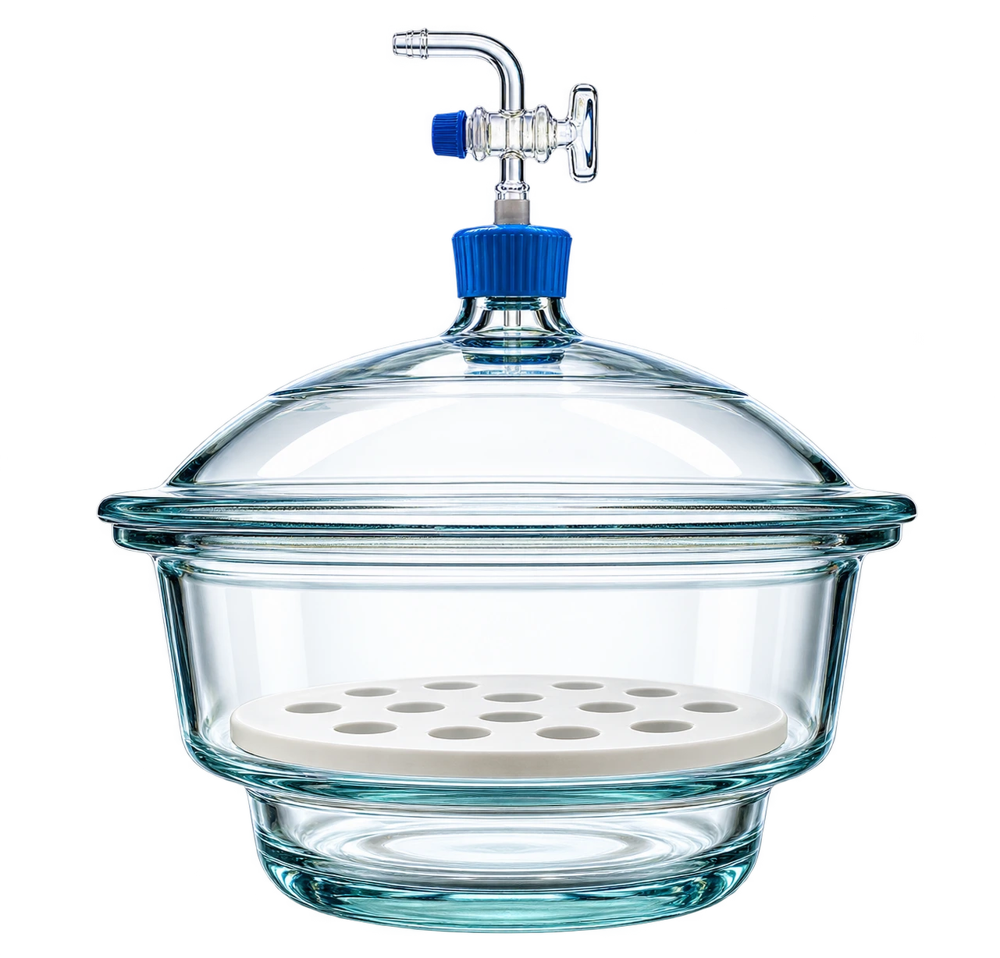

کاتالوگ تجهیزات آزمایشگاه
شیشهآلات
دسیکاتور خلأ شیشهای
Glass Vacuum Desiccator

دسیکاتور خلأ قطر ۱۰۰ میلیمتر
دسیکاتور خلأ برای کاهش تماس نمونه با رطوبت و کمک به خشککردن پس از گرمادهی استفاده میشود. سلامت بدنه و آببندی باید پیش از ایجاد خلأ بررسی شود.
گزینهٔ انتخابشده
دسیکاتور خلأ قطر ۱۰۰ میلیمترمدل مرجع Borosil 3083 با قطر اسمی ۱۰۰ میلیمتر و ابعاد تقریبی فلنج و ارتفاع ۱۵۳ × ۱۷۳ میلیمتر.